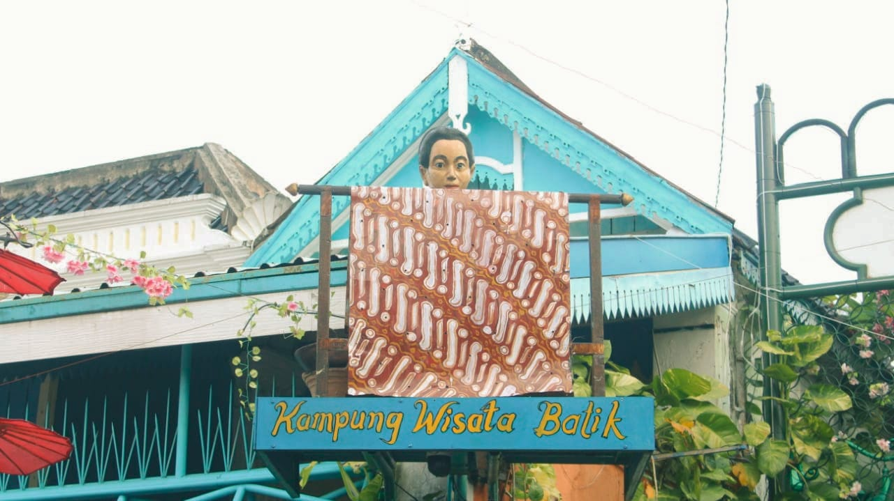
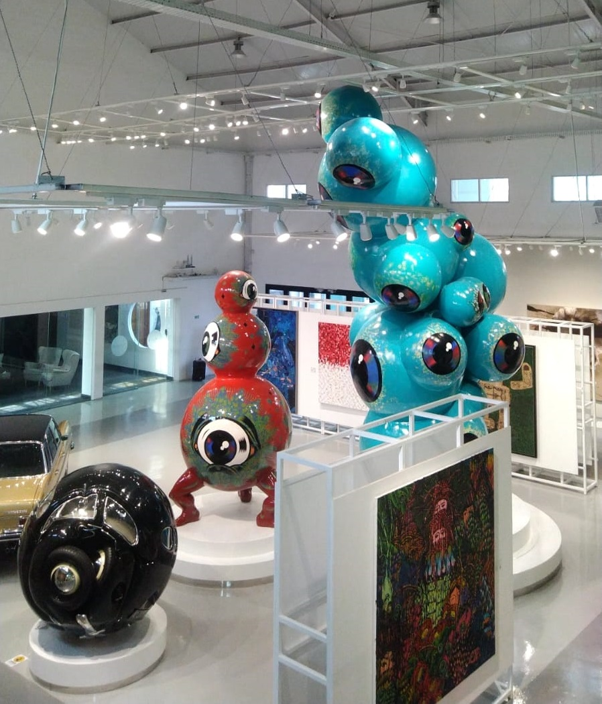
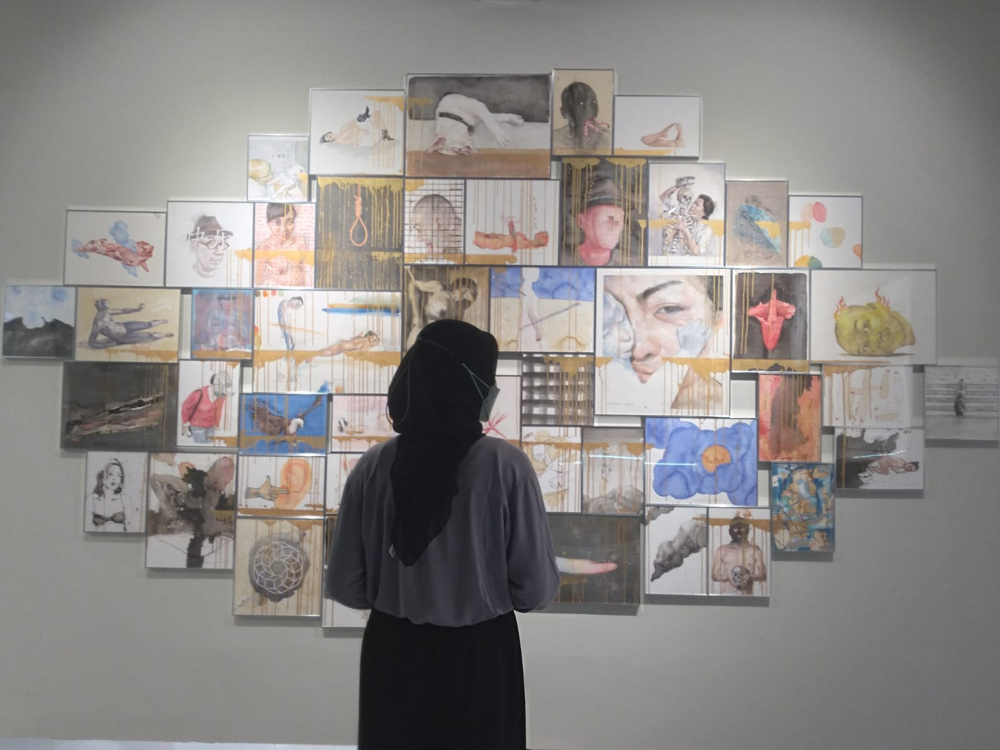

Pariwisata
Menelusuri Museum Radya Pustaka: Saksi Bisu Peninggalan Kota Surakarta
Di sebelah timur Taman Sriwedari, terdapat sebuah bangunan kuno yang menyimpan koleksi-koleksi Keraton Kasunanan. Bangunan ini bernama Museum Radya Pustaka atau disebut juga Lodji Kadipolo, yang berasal dari nama desa di wilayah Sriwedari. Sebelum bertempat di timur Taman Sriwedari, koleksi Radya Pustaka berada di rumah Kanjeng Adipati Sosroningrat IV yang saat itu menjabat sebagai Patih Surakarta, ini membuat para warga segan untuk datang dan berkunjung. Akhirnya pada tahun 1913 Radya Pustaka dipindahkan di Lodji Kadipolo yang bertempat di komplek Sriwedari, sehingga masyarakat Surakarta dengan mudahnya bisa berkunjung serta mempelajari koleksi buku dan karya sastra yang ada.
Museum yang dinobatkan sebagai museum tertua di Indonesia oleh pemerintah Kota Surakarta ini masih menggunakan bangunan aslinya, beberapa perubahan hanya ditujukan untuk memperluas ruangan koleksi. Setiap ruangan diisi dengan koleksi yang sejenis, manuskrip sastra serta budaya Solo, pusaka adat, gamelan, dan patung Rajamala yang merupakan sosok penguasa laut. Museum ini memiliki ikon utama yakni patung Raden Ranggawarsita yang semasa hidupnya dikenal sebagai ahli tasawuf yang tercatat telah menghasilkan 50 karya tulis dalam bentuk prosa dan puisi. Salah satu karyanya yang paling terkenal berisi tentang kehidupan sosial manusia yang tertulis dalam Serat Kalatidha. Ada juga Serat Sabda jati yang mencerminkan kehebatannya dalam dunia ramalan, bahkan dalam serat tersebut tertuliskan ramalan tentang kematian dirinya sendiri.
Selain berisi koleksi lawas, ternyata Museum Radya Pustaka juga menyimpan fakta yang belum banyak orang tahu. Pada 2006 museum ini mengalami pencurian, salah satu koleksi yang dicuri dan dijual kembali oleh pihak ketiga yakni arca. Awalnya sang pembeli, yang juga merupakan adik seorang mantan salah satu Menteri RI, tidak mengetahui jika arca tersebut adalah hasil curian. Kemudian setelah mengetahui fakta tersebut, sang pembeli diminta untuk mengembalikan arca ke Museum Radya Pustaka. Pengembalian dijemput oleh seorang arkeolog bernama Drs. Lambang Babar Purnomo. Dengan profesi sebagai Pegawai Negeri Sipil (PNS) di Balai Pelestarian Peninggalan Purbakala (BP3) Jawa Tengah, ia juga bertugas menyelidiki dan melaporkan kasus-kasus pencurian benda purbakala. Pada hari pengembalian, sepulang dari rumah sang pembeli, Lambang mengumumkan bahwa ditemukan juga beberapa koleksi prasejarah yang tidak memiliki dokumen. Penyelidikan terus dilakukan hingga akhirnya terdapat 2 orang yang ditetapkan sebagai tersangka dan dipenjara selama 18 bulan.
Nahasnya perjuangan sang arkeolog harus terhenti secara paksa oleh orang-orang yang merasa terancam. Pada tanggal 9 Februari 2008, Lambang ditemukan meninggal dunia di sebuah selokan Jalan Lingkar Utara, Pandega Padma, Sleman, DIY. Lambang meninggal dengan luka di kepala dan leher yang patah, setelah dilakukan otopsi dihasilkan data bahwa beliau meninggal akibat kekerasan benda tumpul. Seiring waktu berlalu kasus ini perlahan terbenam dan hilang. Akankah ada sosok pemberani seperti Lambang Babar lainnya kelak? Ada atau tidaknya, semoga Lambang tenang disisi Sang Kuasa.
Ditulis oleh : Refinda Marzuqah
Kampung Batik Kauman : Menikmati Hembusan Angin Diantara Motif Batik

Terdapat satu kampung ikonik yang tidak jauh dari jalan Slamet Riyadi dan Keraton Surakarta, kampung ini selalu menjadi destinasi bagi para pelancong. Apa lagi kalau bukan Kampung Batik Kauman, salah satu kawasan bersejarah yang kaya akan nilai kebudayaan, khususnya dalam hal pelestarian seni batik. Letaknya yang tidak jauh dari Keraton Surakarta, membuat kampung ini masih memiliki kaitan dengan Keraton. Kampung ini dibangun pada masa pemerintahan Raja Pakubuwono III, dan menjadi pemukiman para abdi dalem Keraton Surakarta.
Kata Kauman sendiri dipilih berdasarkan pada keberadaan kaum (ahli agama) sebagai mayoritas penduduk. Keluarga abdi dalem yang tinggal di Kampung Kauman kemudian diberikan pelatihan membatik oleh Keraton Surakarta. Batik yang dihasilkan oleh keluarga para abdi dalem pun pada akhirnya dijadikan suplai untuk Keraton Surakarta. Keterampilan membatik itu terus berkembang hingga saat ini, dan memunculkan pengusaha-pengusaha batik rumahan di Kampung Batik Kauman.
Nilai tradisional pada motif-motif batik kauman yang sangat kental dengan nuansa klasik dan mengikuti pakem Keraton sampai saat ini masih dijaga. Nilai tradisional ini menjadikan Kampung Batik Kauman sebagai salah satu representasi batik Keraton Surakarta yang hingga kini tetap lestari dan dihargai sebagai warisan budaya yang otentik. Kampung Batik Kauman mampu menampilkan keunikan tersendiri dalam memadukan nilai tradisional, spiritual, dan keindahan estetika yang diwariskan dalam seni membatik secara turun-temurun.
Para pengrajin tidak hanya memproduksi batik sebagai barang perputaran ekonomi, namun juga sebagai ekspresi seni dan filosofi mendalam. Setiap motif yang dibuat memiliki filosofinya masing-masing, seperti motif Parang Rusak sebagai simbol keberanian, kekuatan, dan perlindungan dari segala marabahaya, dan motif Sidomukti yang melambangkan harapan akan kemakmuran dan kebahagiaan dalam kehidupan rumah tangga. Penggunaan teknik batik tulis yang dikerjakan secara manual dengan canting dan malam pun menambah nilai seni tinggi pada setiap lembar kain yang dihasilkan.
Selain daya tarik motif batik yang mengikuti pakem Keraton Surakarta, Kampung Batik Kauman memiliki gaya arsitektur khas Jawa dan Belanda pada setiap bangunannya, sehingga menghadirkan pesona yang sangat memukau. Setiap rumah dan sudut kampung ini mampu memancarkan aura klasik tersendiri yang tak akan bisa dilupakan. Hampir tidak mungkin jika para pengunjung tidak merasa tersihir oleh daya tarik arkais yang masih begitu kentara. Daya tarik ini seolah-olah menghisap para pengunjung untuk melintasi lorong waktu yang menghubungkan masa lalu dan masa kini.
Gang-gang kecil yang membentang sepanjang Kampung Batik Kauman selalu merayu pengunjung untuk terus melangkahkan kaki demi merasakan setiap detail kecil dengan hembusan angin lebih mendalam. Berjalan kaki menyusuri gang-gang kecil di Kampung Batik Kauman merupakan pilihan yang tepat, bukan hanya masalah praktisitas saja, namun juga membuka kesempatan untuk benar-benar menikmati setiap aspek keindahan Kampung Kauman. Disetiap langkah, disetiap lirikan mata, akan ada kemungkinan detail-detail kecil terlewatkan bila tidak dihayati.
Ditulis oleh : Refinda Marzuqah
Tumurun Private Museum : Menikmati Indahnya Seni Klasik dan Modern

Tumurun Private Museum di Surakarta, didirikan pada 2008 oleh kolektor seni Iwan Kurniawan Lukminto, menampilkan koleksi seni pribadi seperti lukisan, patung, dan berbagai karya dari berbagai periode. Museum ini menjadi tempat ideal untuk belajar tentang seni dan budaya Indonesia, sekaligus memahami sejarah dan makna di balik setiap karya melalui informasi yang disediakan.
Tumurun Private Museum memiliki koleksi seni yang sangat kaya dengan lebih dari 1.000 karya, meliputi lukisan, patung, keramik, dan tekstil dari berbagai periode dan aliran seni Indonesia. Koleksi museum terbagi menjadi dua bagian utama, yaitu seni tradisional dan seni modern Indonesia. Bagian seni tradisional menampilkan berbagai bentuk seni khas Indonesia seperti wayang, topeng, batik, dan keris. Wayang dan topeng menggambarkan seni pertunjukan Jawa yang sarat makna budaya, sementara batik menunjukkan keindahan motif dan teknik yang diwariskan turun-temurun. Koleksi keris memperlihatkan keahlian seni tempa logam tradisional yang unik.

Sementara itu, bagian seni modern memuat karya seniman terkenal seperti Affandi, Basuki Abdullah, dan Raden Saleh. Karya-karya ini mencerminkan perjalanan seni rupa modern Indonesia, mulai dari lukisan pemandangan dan potret hingga karya abstrak, menunjukkan berbagai gaya dan perkembangan seni di tanah air.

Tumurun Private Museum menyediakan berbagai fasilitas untuk mendukung pengalaman pengunjung dalam mempelajari seni dan budaya Indonesia. Fasilitas tersebut meliputi ruang pameran yang menampilkan koleksi seni secara menarik, ruang edukasi untuk program belajar dan tur, serta perpustakaan dengan koleksi buku tentang seni dan sejarah Indonesia. Ada juga ruang audio-visual yang menayangkan film budaya, kafe untuk bersantai, dan toko suvenir yang menjual berbagai barang khas seni Indonesia. Dengan fasilitas lengkap ini, museum menawarkan pengalaman yang menyeluruh bagi pengunjung untuk mengeksplorasi dan mengapresiasi kekayaan seni dan budaya Indonesia.

Tumurun Private Museum buka untuk umum dari Selasa sampai Minggu, pukul 10 pagi hingga 5 sore. Harga tiket masuknya adalah Rp 50.000 untuk dewasa dan Rp 25.000 untuk anak-anak. Pengunjung diharapkan membayar sesuai tarif tersebut, dan disarankan mengecek informasi terbaru tentang jam buka atau harga tiket melalui situs resmi atau kontak museum. Museum ini beralamat di Jalan Kebangkitan Nasional No. 2/4, Sriwedari, Laweyan, Surakarta, Jawa Tengah, yang terletak di pusat kota sehingga mudah dijangkau dengan kendaraan pribadi maupun transportasi umum.